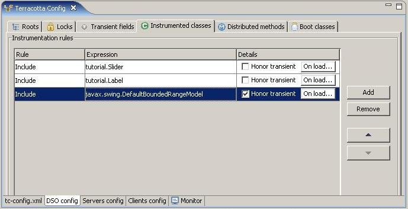

Any class that contains a field you would like to make a shared root or is a type whose instances will be part of a shared object graph must be instrumented by DSO. You can specify which classes in your project are to be instrumented in the Instrumented Classes tab of the DSO Config page of the Terracotta Config editor.

Instances of instrumented classes may be shared. To indicate to DSO that any Java transient fields of a shared instance should not be shared, select the Honor transient checkbox. By default DSO includes all fields of a shared object for replication. In addition to fields marked as Java transient, a shared object may contain other fields that aren't appropriate for transparent replication. Those fields should be marked as DSO Transient Fields. One way or the other, those transient fields need to get re-initialized when a new copy of a shared object is materialized on a client. You can use the On load button to specify a method to invoke or some BeanShell script to execute on the shared instance. These two methods allow you to re-initialize any transient fields needed by a shared object.
You can manually enter a class pattern or select a class or package-fragment from a chooser. Alternately, you can select the class in the Package Explorer or Outline View, invoke the Terracotta context menu and choose Instrumented.
In addition to specifying which classes are to be instrumented, you can also specify classes that are to be excluded from instrumentation. This is useful because the pattern language for describing class includes and exclude allows for a shorthand wildcard notation, much like regular expressions. For convenience, you can specify that all classes under a particular package-fragment be instrumented. If there are actually some classes in that set that should not be instrumented, you can explicitly exclude them.
You can manually enter an excluded class pattern or select a class or package-fragment from a chooser. Alternately, you can select a class or package-fragment in the Workspace Explorer or Outline View, invoke the Terracotta context menu and choose Excluded.
A DSO instrumented class appears in the Project Explorer or Outline View with a red check adorning its label. An excluded class is adorned with a red crossmark.
The order of your instrumentation rules (include or exclude) are significant, earlier rules are superceded by later rules. You can change the order of an instrumentation rule by selecting it and using the arrow buttons to move the rule up or down the list.
The pattern language for specifying the set of your classes to be instrumented or excluded is based on those used in Aspect-oriented Programming frameworks for specify pointcuts. The following are valid instrumentation include and exclude patterns:
com.project.Main |
specifies only class Main in com.project |
com.project.* |
specifies all classes in com.project |
com.project.*Main |
specifies all classes in com.project ending with Main |
com..* |
specifies all classes under com |
For the complete description refer to the Aspectwerks joinpoint selection pattern language.
For more information on the concept of class instrumentation refer to DSO Class Instrumentation.